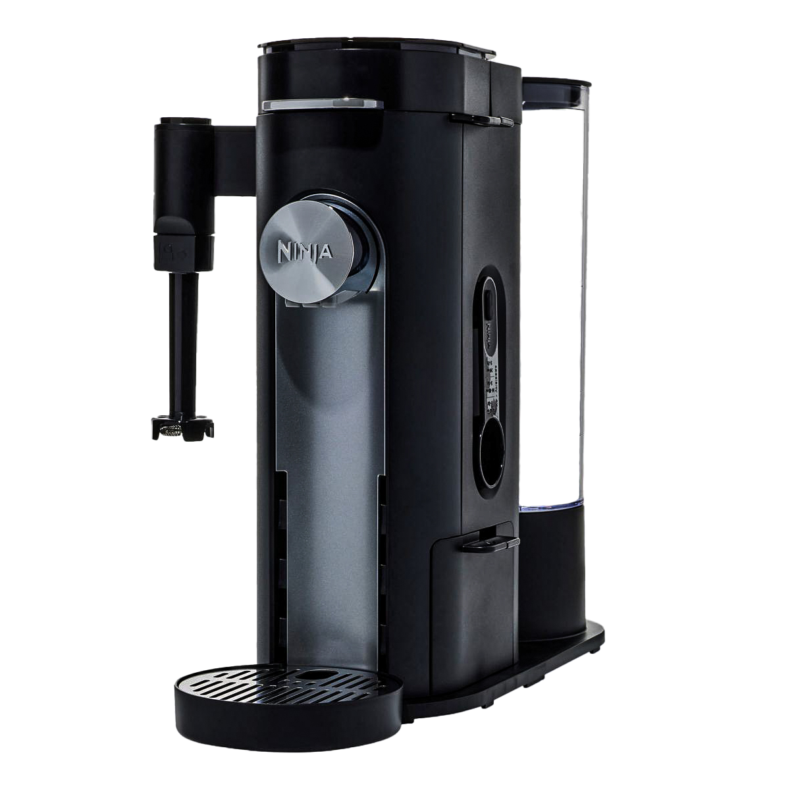

Café ideal
al instante
CAFETERA "PB051" CAPSULAS Y MOLIDOS

Diseño inteligente
COMPONENTES PARA UNA EXPERIENCIA ÚNICA

Espumador de leche
Transforma la leche común en una espuma ligera, aporta textura y cremosidad, perfecta para elevar tu experiencia de café.

Elementos clave
- Pantalla fácil de usar
- Piezas extraíbles
- Adaptador de cápsulas
- Cuchara medidora de café
Accesorios esenciales
DESCUBRE NUESTRA SELECCIÓN DE PRODUCTOS

Jarra de vidrio
Mantén la frescura y el aroma de tu café. Diseñada para conservar la temperatura.
Filtro permanente de cápsula
Opta por la sostenibilidad. El filtro permite disfrutar una y otra vez.
Tapa para vaso viajero
Disfruta de tu café en cualquier lugar. La tapa asegura un sellado perfecto y evita derrames.Experimenta el sabor genuino de nuestro café y convierte cada instante en un deleite memorable
Refinamiento en cada taza
LA EXCELENCIA DE TU CAFÉ, DONDE QUIERAS

{kind=link}
{kind=link}
{kind=link}
{kind=link}
{kind=link}
Fenoglio Celina
Catedra Belluccia